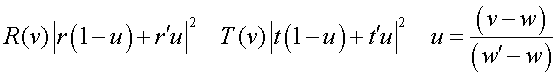

Creates a coating specified by its transmissive and reflective properties.
Syntax
COATINGS [ k ] [ PROPERTIES ]
r [ t r' t' r" t" ... ] [ 'name' ]
:
| Option | Description |
|---|
| k | starting coating number |
| r r' r" ... | real energy (or complex amplitude) reflectances |
| t t t" ... | real energy (or complex amplitude) transmittances |
| 'name' | string for the name is limited to 16 characters |
Remarks
- The default value of k
is one more than the largest coating number defined, and is set to 1 at the start of
program processing.
- The a is the angle of
incidence at which the thicknesses are desired; the default for a
is zero degrees (normal incidence).
- If more than one pair of data is entered,
the coefficients correspond to the wavelengths entered on the last WAVELENGTHS command.
- ASAP linearly interpolates, if necessary,
to obtain the coefficients at any desired wavelength.
- ASAP can use the transmission (or
reflection) values from a COATING PROPERTIES table or calculate
the coefficients from a COATINGS LAYERS table (based on the
normal incident form of Fresnel's formulae) to determine the optical properties of a
given object INTERFACE.
- ASAP then interpolates (linearly in
complex amplitude) to get the coefficients at any desired wavelength. For example,
the actual reflectivities and transmissions at a wavelength v
between the first two WAVELENGTHS
w w' would be,

The r's and t's in the above equations
are the entered complex amplitudes, or the square roots of the real energy
coefficients.
COATINGS Examples